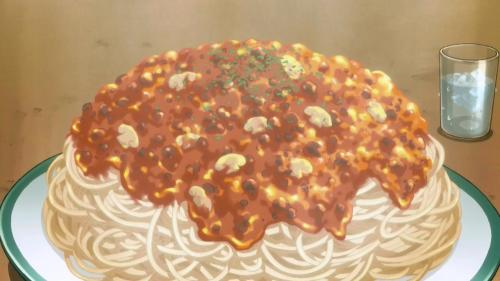

Spaghetti Bolognese

Description
A good way to get a meat lover their daily dose of vegetables along side a hearty serving of noodles. This veggie meat sauce is a perfect mix of texure and flavor making it my all time favorite type of spaghetti to make.
- 1/2 pound minced turkey or beef
- 3 - 5 strips of bacon
- 1/2 a yellow onion, diced finely
- 1 celery stick, diced finely
- 1/2 a carrot, diced finely
- 6 cherry tomatoes, diced finely
- Tomato sauce
- 1 tbs Italian herbs
- Parmesan cheese
- 2 button mushrooms, sliced thinly
- 3 servings of spaghetti noodles
- Chopped parsley leaves
Steps
- Add a bit of oil to a pan and bring this to a medium heat. Add the bacon and onion.
- Once the onion is transparent add the celary, carrot, and cherry tomatoes. Stir fry this until the vegetables have began to shrunk.
- Mix in tomato sauce herbs. Bring this up to a boil. Add salt and pepper to taste.
- Once boiling bring down to a simmer until the sauce is thick.
- Mix parmesan cheese into the sauce little by little.
- Get the noodles started, cook these to your liking.
- Saute the mushroom slices in oil and butter, mix these into the meat sauce.
- Place a portion of noodles on a plate, top with the Bolognese sauce, sprinkle parsley leaves on top.
- Enjoy!
Home